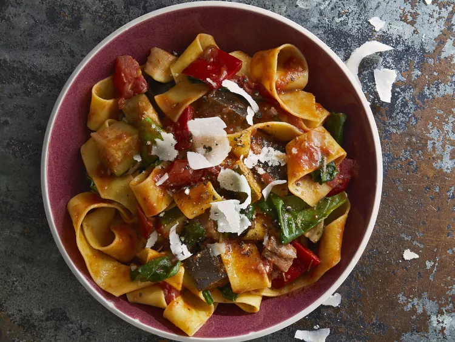

<< back
Ratatouille Pappardelle
Summer vegetables find a splendid home among ribbons of pappardelle
accented with freshly shaved Parmesan for an easy pasta dish that's
also fun to pronounce.

- Prep Time
- 30 mins
- Cook Time
- 40 mins
- Servings
- 4
Ingredients
-
1/4 cup extra-virgin olive oil
for ratatouille
-
2 tablespoons extra-virgin
olive oil for pasta
- 1 large onion, chopped
-
1 1/2 cloves garlic, minced
-
1 lb tomatoes, cut into
1/2-inch pieces
-
1 eggplant, cut into 1/2-inch
pieces
-
3 zucchini, cut into 1/2-inch
pieces
-
1 red bell pepper, cut into
1/2-inch pieces
- 1/4 cup tomato sauce
-
1 1/2 tablespoons herbes de
Provence
-
salt and cracked black pepper
to taste
- 1/4 cup dry red wine
- 4 cups fresh spinach
-
2 ounces Parigiano-Reggiano
cheese, shaved
-
2 teaspoons balsamic vinegar,
or to taste (optional)
Steps
-
Pour olive oil into a large pot over
high heat.
-
Add onion and garlic and
saute for 2 minutes.
-
Reduce heat and add
tomatoes, eggplant, zucchini, bell pepper, tomato sauce,
herbes de Provence, salt, and pepper.
-
Stir in wine, cover, and
simmer for 10 minutes.
-
Uncover and simmer until vegetables
are just tender, 12 to 15 minutes.
-
Leave ratatouille warm in the pot
until ready to use.
-
Fill a large pot with lightly salted
water and bring to a
rolling boil.
-
Cook pasta at a boil until tender
yet firm to the bite, about 10 minutes.
-
Drain, reserving 1/2 cup cooking
water.
- Toss pasta with oil.
-
Reheat ratatouille in an extra-large
skillet over medium heat.
-
Add pasta and spinach; toss just
until spinach wilts.
-
Add enough reserved
pasta water to make a saucy
consistency.
- Season with salt and pepper.
-
Sprinkle with Parmigiano-Reggiano
cheese and drizzle with balsamic
vinegar.